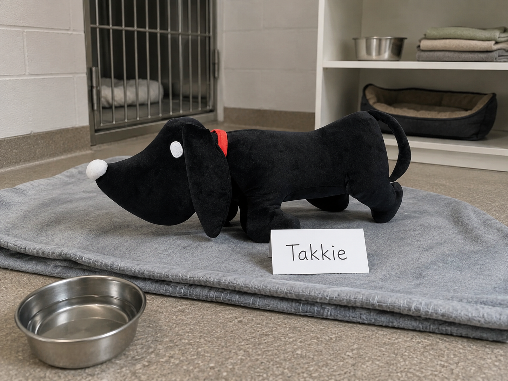
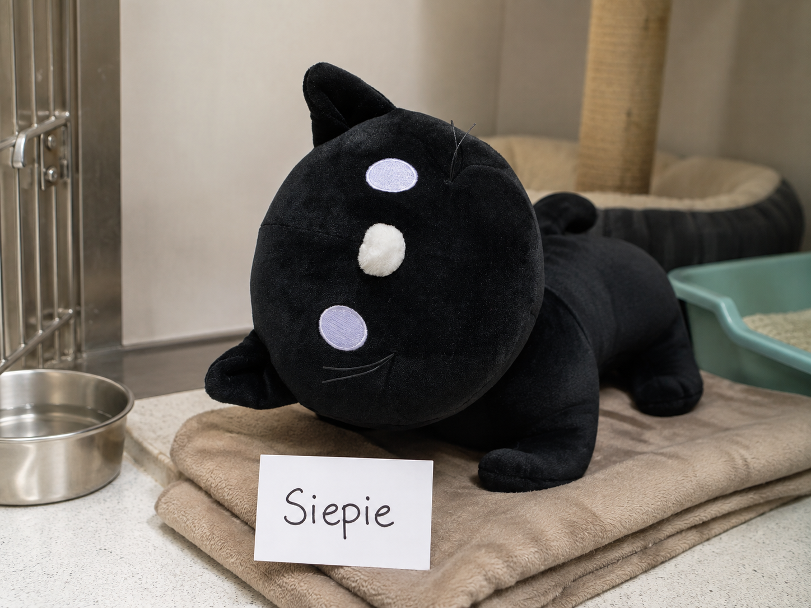
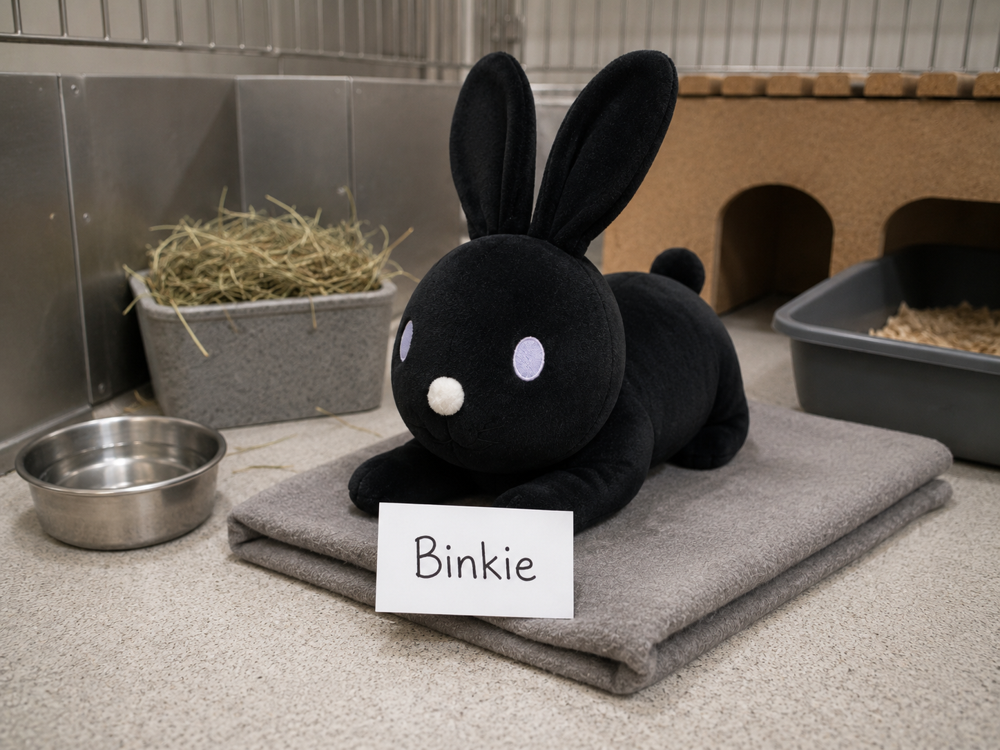

Takkie is een vriendelijke hond van 3 jaar. Hij houdt van wandelen en zoekt een rustig thuis.

Siepie is een rustige kat van 7 jaar. Ze ligt graag op een warme plek en vindt aandacht erg fijn.

Binkie is een nieuwsgierig konijn van 2 jaar. Hij zoekt een huis met voldoende ruimte om te bewegen.

Spreekt een van onze dieren je aan? Bekijk dan eerst onze adoptiepagina. Daar lees je hoe een adoptie werkt en wat je nodig hebt om een dier een nieuw thuis te geven.
Heb je een andere vraag of kunnen we je ergens anders mee helpen? Neem dan gerust contact met ons op.